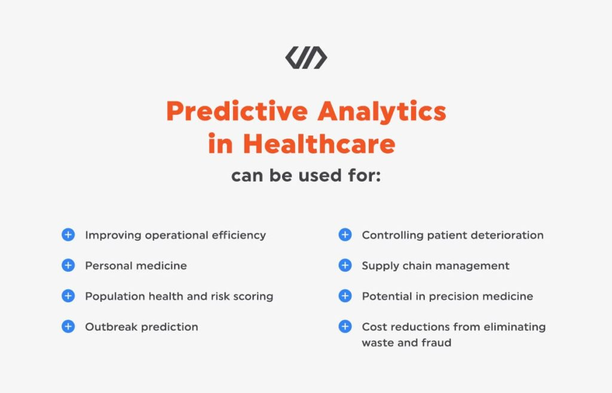

Big Data với những tính năng vượt trội kết hợp với
các công nghệ khác như AI và Cloud đã thay đổi nền Y học một cách
vô cùng kinh ngạc bởi những thành tựu của nó.

Một trong những tập dữ liệu quan trọng là hồ sơ nhập viện trị giá 10 năm,
được các nhà khoa học dữ liệu thu thập bằng kỹ thuật "phân tích chuỗi thời gian".
Những phân tích này cho phép các nhà nghiên cứu thấy được các mô hình liên quan trong tỷ lệ nhập viện.
Sau đó, họ có thể sử dụng AI để tìm ra các thuật toán chính xác nhất dự đoán xu hướng nhập viện trong
tương lai. phí hoạt động có thể giảm đáng kể
Big Data đang giúp giải quyết vấn đề này, ít nhất là tại một vài bệnh viện
ở Paris.
1 nghiên cứu của Intel
Mỗi bệnh nhân đều có hồ sơ kỹ thuật số của riêng mình, bao gồm tiền sử bệnh,
dị ứng, kết quả xét nghiệm v.v. Hồ sơ được chia sẻ qua hệ thống thông tin
an toàn và có sẵn cho các nhà cung cấp từ cả khu vực công và tư.
Mọi hồ sơ đều bao gồm một tệp có thể sửa đổi, có nghĩa là bác sĩ có thể
thực hiện các thay đổi theo thời gian mà không cần thủ tục giấy tờ và
không có nguy cơ sao chép dữ liệu.
EHR cũng có thể kích hoạt cảnh báo và nhắc nhở khi bệnh nhân nên làm xét nghiệm
mới hoặc theo dõi các đơn thuốc để xem liệu bệnh nhân có tuân theo chỉ định
của bác sĩ hay không. Mặc dù EHR là một ý tưởng tuyệt vời, nhiều quốc gia vẫn
phải vật lộn để thực hiện chúng một cách hoàn chỉnh.
Một loại cảnh báo tìm kiếm các sự kiện liên tục trong thời gian thực.
Cảnh báo thời gian thực có thể kích hoạt các hành động cảnh báo dựa vào mỗi điều kiện báo về.
Ví dụ: nếu huyết áp của bệnh nhân tăng đáng báo động, hệ thống sẽ gửi cảnh báo trong thời gian thực đến bác sĩ,
sau đó sẽ thực hiện hành động tiếp cận bệnh nhân và thực hiện các biện pháp để giảm huyết áp.
Ngoài ra, thông tin này sẽ được truy cập vào cơ sở dữ liệu về tình trạng sức khỏe của công chúng, cho phép các bác sĩ so sánh dữ liệu này trong bối cảnh kinh tế xã hội và sửa đổi các chiến lược phân phối phù hợp. Các tổ chức
và các nhà quản lý chăm sóc sẽ sử dụng các công cụ tinh vi để theo dõi dòng dữ liệu khổng lồ này và phản ứng lại mỗi khi kết quả bị xáo trộn.
Nhiều người tiêu dùng - những bệnh nhân tiềm năng – thường xuyên sử dụng các thiết bị thông minh ghi lại mọi bước họ thực hiện,
nhịp tim, thói quen ngủ, v.v. Tất cả thông tin quan trọng này được kết hợp với các dữ liệu theo dõi khác để xác định các nguy cơ sức
khỏe tiềm ẩn đang rình rập.
Ví dụ : mất ngủ mãn tính và nhịp tim tăng cao có thể báo hiệu nguy cơ mắc bệnh tim trong tương lai.
Bệnh nhân trực tiếp tham gia vào việc theo dõi sức khỏe của chính họ và các ưu đãi từ bảo hiểm y tế có thể thúc đẩy họ có lối sống
lành mạnh.
Một cách khác để làm như vậy là các thiết bị dạng dây đeo đang được phát triển, giúp theo dõi các xu hướng sức khỏe cụ thể và
chuyển tiếp chúng lên Cloud để các bác sĩ có thể theo dõi chúng. Bệnh nhân bị hen suyễn hoặc huyết áp có thể dựa vào đó,
và trở nên độc lập hơn và giảm việc đi khám bác sĩ khi không thật sự cần thiết.

Các nhà nghiên cứu y học có thể sử dụng một lượng lớn dữ liệu để lên kế hoạch điều trị và xác định tỷ lệ hồi phục của bệnh nhân ung thư,
giúp tìm ra các xu hướng và phương pháp điều trị có tỷ lệ thành công cao nhất trong thực tế.
Ví dụ, các nhà nghiên cứu có thể kiểm tra các
mẫu khối u trong các ngân hàng sinh học được liên kết với hồ sơ điều trị của bệnh nhân. Sử dụng dữ liệu này, các nhà nghiên cứu có thể thấy
những thứ như cách một số đột biến và protein ung thư tương tác với các phương pháp điều trị khác nhau và tìm ra các xu hướng sẽ dẫn đến kết
quả tốt hơn cho bệnh nhân.
Dữ liệu này cũng có thể dẫn đến những lợi ích bất ngờ, chẳng hạn như phát hiện ra rằng
Desipramine
, có khả năng giúp chữa khỏi một số loại ung thư phổi.
Tuy nhiên, để làm cho những loại thông tin chi tiết này khả dụng hơn, cơ sở dữ liệu của bệnh nhân từ các tổ chức khác nhau như bệnh viện,
trường đại học và tổ chức phi lợi nhuận cần được liên kết với nhau. Sau đó, chẳng hạn, các nhà nghiên cứu có thể truy cập các báo cáo sinh
thiết bệnh nhân từ các tổ chức khác. Một trong những trường hợp sử dụng dữ liệu lớn tiềm năng trong chăm sóc sức khỏe sẽ là giải trình tự
gen của các mẫu mô ung thư từ bệnh nhân thử nghiệm lâm sàng và cung cấp những dữ liệu này cho cơ sở dữ liệu lớn hơn về ung thư.
Một số nghiên cứu đã chỉ ra rằng 93% tổ chức chăm sóc sức khỏe đã gặp phải sự cố vi phạm dữ liệu.
Lý do rất đơn giản: dữ liệu cá nhân cực kỳ có giá trị và sinh lợi trên thị trường chợ đen. Và bất kỳ vi phạm nào cũng sẽ có hậu quả
nghiêm trọng. Với ý nghĩ đó, nhiều tổ chức bắt đầu phân tích những thay đổi trong lưu lượng mạng hoặc bất kỳ hành vi nào khác phản ánh
một cuộc tấn công mạng,để giúp ngăn chặn các mối đe dọa bảo mật bằng cách xác định.
Tất nhiên, Big Data cũng có các vấn đề bảo mật cố hữu
và nhiều người cho rằng việc sử dụng nó sẽ khiến các tổ chức dễ bị tấn công hơn. Nhưng những tiến bộ về bảo mật như công nghệ mã hóa,
tường lửa, phần mềm chống vi-rút, v.v., đáp ứng nhu cầu bảo mật hơn và những lợi ích mang lại phần lớn vượt qua rủi ro.
Tương tự như vậy, nó có thể giúp ngăn chặn gian lận. Analytics giúp hợp lý hóa việc xử lý các yêu cầu bảo hiểm,
cho phép bệnh nhân nhận được lợi nhuận tốt hơn từ các yêu cầu của họ và người chăm sóc được thanh toán nhanh hơn.
Nó được sử dụng để tham vấn và chẩn đoán ban đầu, theo dõi bệnh nhân từ xa và giáo dục y tế cho các chuyên gia y tế.
Một số ứng dụng cụ thể hơn bao gồm phẫu thuật từ xa - các bác sĩ có thể thực hiện các hoạt động bằng cách sử dụng robot và
cung cấp dữ liệu thời gian thực tốc độ cao mà không cần ở cùng một địa điểm với bệnh nhân.
Các bác sĩ lâm sàng sử dụng y học từ xa để đưa ra các kế hoạch điều trị được cá nhân hóa và ngăn ngừa việc nhập viện hoặc tái nhập viện.
Việc sử dụng phân tích dữ liệu chăm sóc sức khỏe như vậy có thể được liên kết với việc sử dụng phân tích dự đoán như đã thấy trước đây.
Nó cho phép các bác sĩ lâm sàng dự đoán trước và ngăn ngừa tình trạng bệnh nhân xấu đi.
telemedicine giúp giảm chi phí và nâng cao chất lượng dịch vụ. Bệnh nhân có thể tránh phải xếp hàng chờ đợi và bác sĩ không
mất thời gian cho những cuộc tư vấn và thủ tục giấy tờ không cần thiết. Telemedicine cũng cải thiện mức độ sẵn sàng của dịch vụ chăm sóc
vì tình trạng của bệnh nhân có thể được theo dõi và tư vấn mọi lúc mọi nơi.
Trên toàn cầu, gần 800.000 người chết vì tự tử mỗi năm. Ngoài ra, 17% dân số thế giới sẽ tự làm hại bản thân trong suốt cuộc đời của họ.
Những con số này thật đáng báo động. Nhưng trong khi đây là một lĩnh vực rất khó giải quyết, việc sử dụng BIG DATA trong chăm sóc sức khỏe
đang giúp tạo ra một thay đổi tích cực liên quan đến tự tử và tự làm hại bản thân (self – harm ).
Các tổ chức chăm sóc sức khỏe có thể sử dụng phân tích dữ liệu để xác định những cá nhân có thể có ý định tự làm hại bản thân.
Phát biểu về chủ đề này, Gregory E. Simon, MD, MPH, một điều tra viên cấp cao tại Viện Nghiên cứu Sức khỏe Kaiser Permanente Washington, đã phát biểu :
“We demonstrated that we can use electronic health record data in
combination with other tools to accurately identify people at high risk for suicide attempt or suicide death.”
Big Data trong trường hợp này thực sự là một minh chứng thực tế cho thấy việc phân tích y tế có thể cứu sống con người.